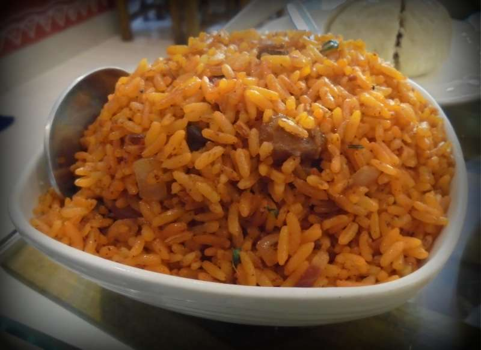
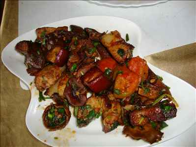
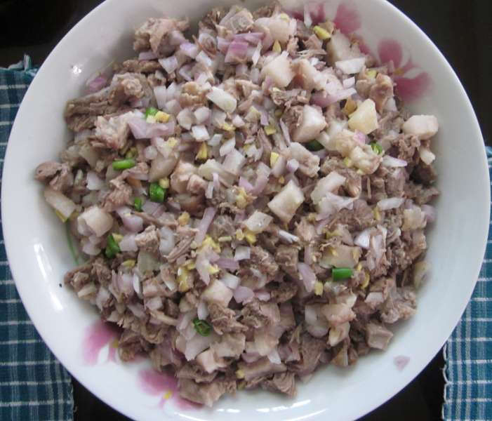
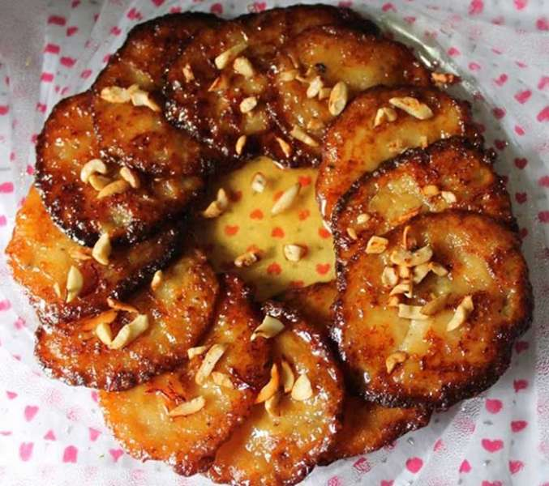

The dishes originating from the North-east are deeply rooted in the traditions and culture of the seven states and are an important part of the rich,
diverse, varied food that is Indian cuisine. Meghalaya has three Mongoloid tribes and many distinct dishes like:Narikol or
Khapse to indulge yourself or savoury dishes like Khar, Zan or Gyathuk to appease your taste buds.

Jadoh: Jadoh is a very popular dish among the Khasi community of Meghalaya. It is especially appetising because of its
rich and unique colour. Jadoh is basically red rice, cooked with generous amounts of pork meat. Sometimes, it is also cooked with chicken or
fish. A mix of green chillies, onions, ginger, turmeric, black pepper and bay leaves is made, then pieces of pork are added and fried off, after which the
red rice is added and cooked off. The addition of turmeric imparts the rice its rich yellow color and an aromatic flavour.

Minil Songa: A popular dish among the Garo tribe of Meghalaya, Minil Songa is a sticky rice preparation.
Minil is a sticky rice which has a rich nutty flavour and delicate texture. It has a high amount of starch, making it sticky. To make Minil Songa, Minil rice
is boiled in fresh bamboo and eaten as snacks. It helps in constipation and improves digestion.

Doh-Khlieh: A wholesome meal that is healthy at the same time – Doh Khlieh is a delicious salad made out of
minced pork, onions and chillies. One of the extreme dishes for those adventurous enough to try the wild side of Meghalayan cuisine.

Pukhlein: Another dish made from powdered rice, this time sweet. Pukhlein is powdered rice, sweetened with
jaggery. The jaggery and rice mixture is fried together in the pan, to form a deep, thick paste. The golden brown crispy rice is best served
with a wide variety of meat items, and serves as a welcome respite to soothe the palate.